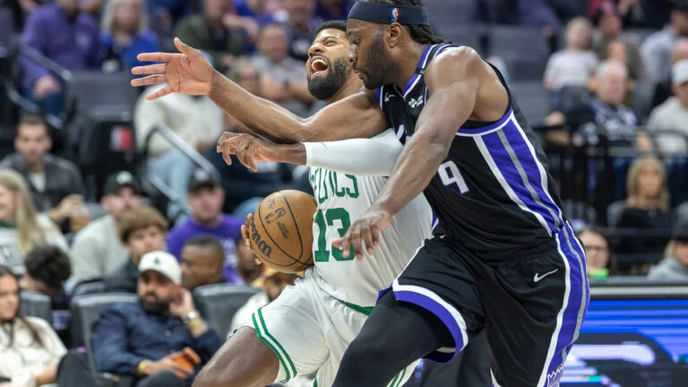
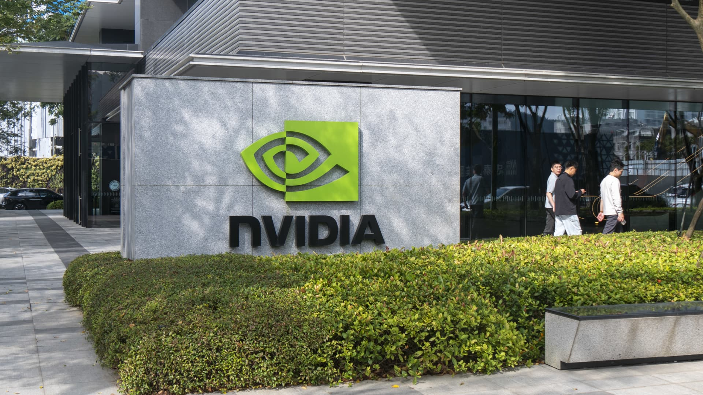

01
公羊队明星外接手的任期“可能结束”
Rams star wide receiver’s tenure ‘probably ending’ according to NFL insider
NFL内部人士表示公羊队明星外接手的任期“可能结束”。
An NFL insider suggests that the tenure of the Rams star wide receiver is 'probably ending'.
原始报道 / Original source ↗DAILY NEWS · 每日新闻简报
Independent AI-assisted summaries of linked reports. Headlines, dates and source URLs are supplied by NewsAPI; summaries are not independent verification of full articles. Please read original reports for details.
Rams star wide receiver’s tenure ‘probably ending’ according to NFL insider
NFL内部人士表示公羊队明星外接手的任期“可能结束”。
An NFL insider suggests that the tenure of the Rams star wide receiver is 'probably ending'.
原始报道 / Original source ↗FBI investigating apparent hack of its key national criminal justice database, AP source says
据美联社消息，FBI正在调查其关键国家刑事司法数据库的明显黑客事件。
The FBI is investigating an apparent hack of its key national criminal justice database, according to an AP source.
原始报道 / Original source ↗
Murray’s putback with 5 seconds left lifts Kings to 97-96 win over Celtics
穆雷在最后5秒的补篮帮助国王以97-96战胜凯尔特人。
Murray's putback with 5 seconds left lifted the Kings to a 97-96 victory over the Celtics.
原始报道 / Original source ↗
Homes in a ‘low-priced town’ in Greater Boston are now $600,000, a new report says.
一份新报告称，大波士顿地区“低价城镇”的房屋现已达到60万美元。
A new report states that homes in a 'low-priced town' in Greater Boston are now $600,000.
原始报道 / Original source ↗Elias Lindholm’s big night at TD Garden included 4-goal game, delayed hat-trick tribute
埃利亚斯·林德霍姆在TD花园的精彩之夜包括4球比赛和延迟的帽子戏法致敬。
Elias Lindholm's big night at TD Garden featured a 4-goal game and a delayed hat-trick tribute.
原始报道 / Original source ↗布伦特原油与WTI美国原油最新市场行情。
Brent and WTI crude oil market quotations.
价格及更新时间以行情提供方为准。

Anthropic’s record IPO collides with tech’s worst week on Wall Street since 2020
Anthropic在纳斯达克的历史性首秀恰逢华尔街自2020年以来最糟糕的一周。
Anthropic's historic IPO coincided with Wall Street's worst week for tech since 2020.
原始报道 / Original source ↗
Trump orders federal contractors to check with White House before responding to Congress
特朗普总统指示联邦承包商在回应国会询问前咨询白宫。
President Trump has ordered federal contractors to consult the White House before responding to Congress.
原始报道 / Original source ↗S&P 500 correction: Five forces behind the market sell-off
标准普尔500指数和道琼斯工业平均指数已进入修正区间，较历史最高点下跌10%。
The S&P 500 and Dow Jones Industrial Average have entered correction territory, down 10% from their records.
原始报道 / Original source ↗The Nasdaq is in freefall. Here's one stock to look at
高昂的期权溢价为亚马逊创造了机会。
Elevated options premiums are creating an opportunity in Amazon.
原始报道 / Original source ↗Warren Buffett quadruples Thanksgiving gifts: A breakdown of how much wealth he's giving away
沃伦·巴菲特今年将感恩节捐赠增加到55亿美元，超过四倍。
Warren Buffett has more than quadrupled his Thanksgiving donations to $5.5 billion this year.
原始报道 / Original source ↗
Nvidia stock plunges 14%, wraps up longest weekly losing streak since 2008 financial crisis
曾经是世界上最有价值的公司，英伟达现在在苹果、微软和Alphabet之后排名第四。
Nvidia stock has plunged 14%, marking its longest weekly losing streak since the 2008 financial crisis.
原始报道 / Original source ↗Zscaler stock jumps 18% on report that CrowdStrike in talks to buy security vendor
网络安全公司在人工智能时代一直在寻找收购机会。
Zscaler stock rose 18% on reports that CrowdStrike is in talks to acquire a security vendor.
原始报道 / Original source ↗Warsh wants Fed officials to talk less. Instead, they’re talking more
美联储官员最近频繁发言，而美联储主席则保持沉默。
Fed officials have been increasingly vocal lately while the Fed chairman remains on the sidelines.
原始报道 / Original source ↗Highlights and challenges from covering an historic month in South America
NPR的南美记者讨论她在报道历史性选举和教皇访问中的工作。
NPR's South America Correspondent discusses her work covering a historic election upset and a papal visit.
原始报道 / Original source ↗AI is changing software engineering — and some developers miss the struggle
人工智能编码工具使软件工程师更高效，但开发者表示工作失去了“乐趣和快乐”。
AI coding tools are making software engineers faster, but developers say the work has lost its 'sense of joy and fun.'
原始报道 / Original source ↗